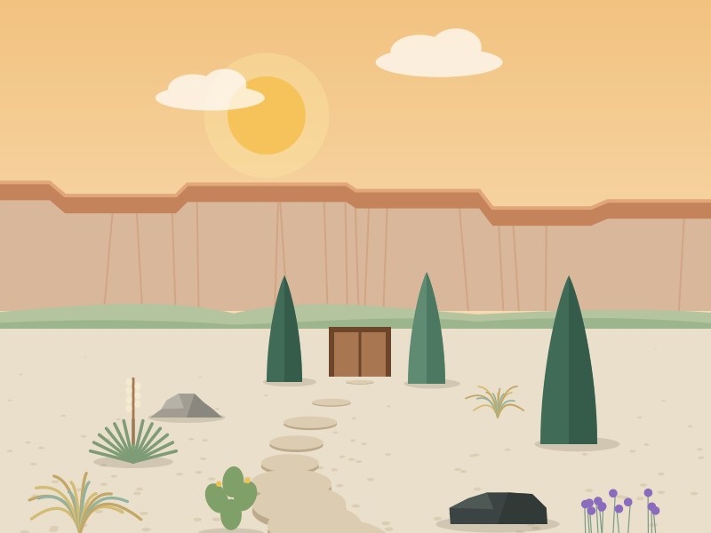

No signal right now
Pages you've already opened still work. You can still call us. Phone calls don't need data.
Call (970) 555-0142 Try the home page again
Pages you've already opened still work. You can still call us. Phone calls don't need data.
Call (970) 555-0142 Try the home page again